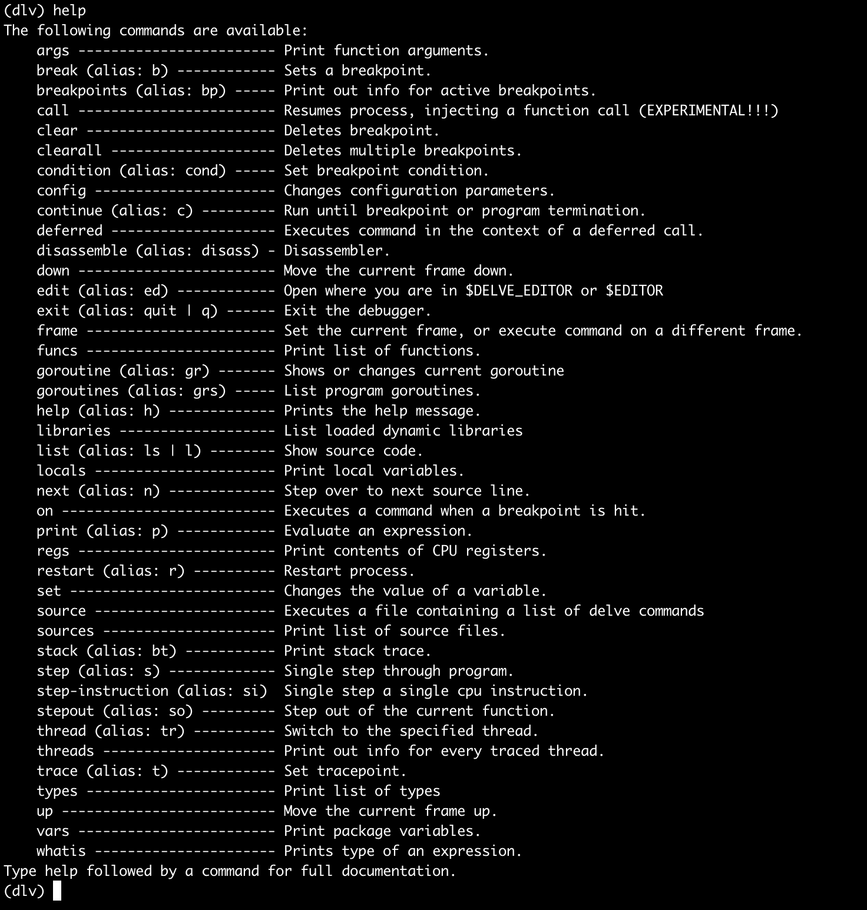
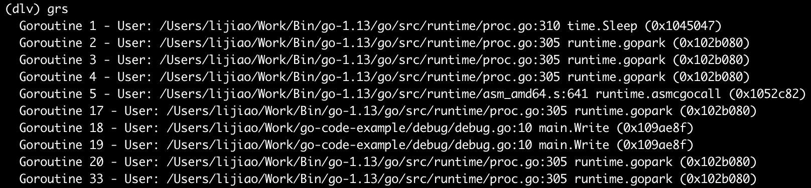
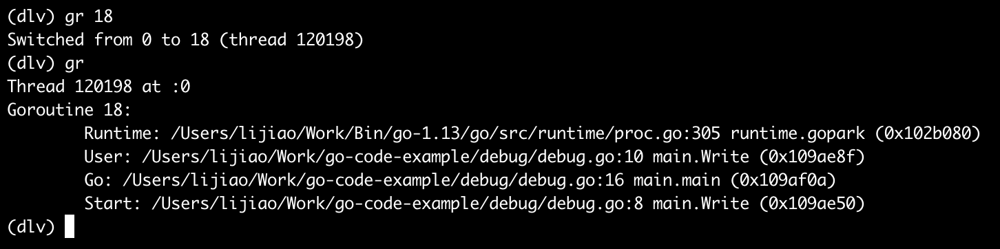
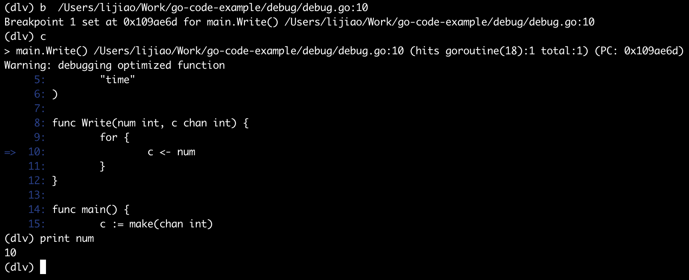

Go 语言程序运行时跟踪调试
delve 是现阶段最好用的跟踪调试工具，支持 Linux 和 macOS，是 GoLand 使用的调试工具。
（2020-01-01 19:27:25）
macOS 上安装 delve：
$ xcode-select --install # 如果已经安装了 xcode 工具，这一步不需要
$ go get -u github.com/go-delve/delve/cmd/dlv
Usage:
dlv [command]
Available Commands:
attach Attach to running process and begin debugging.
connect Connect to a headless debug server.
core Examine a core dump.
debug Compile and begin debugging main package in current directory, or the package specified.
exec Execute a precompiled binary, and begin a debug session.
help Help about any command
run Deprecated command. Use 'debug' instead.
test Compile test binary and begin debugging program.
trace Compile and begin tracing program.
version Prints version.
目标程序
写一个超级简单的小程序作为跟踪调试目标：
package main
import (
"fmt"
"time"
)
func Write(num int, c chan int) {
for {
c <- num
}
}
func main() {
c := make(chan int)
go Write(10, c)
go Write(20, c)
for {
select {
case v := <-c:
fmt.Printf("receive %d\n", v)
time.Sleep(2 * time.Second)
}
}
}
dlv 调试
用 dlv attach 正在运行中的进程（attach 后进程会被接管，暂停运行）：
$ dlv attach 7282
Type 'help' for list of commands.
(dlv)
help 查看 dlv 支持的调试命令：

grs 显示所有的 goroutine：

gr 显示当前的 goroutine 或者切换到指定的 goroutine：

打断点：

到断点位置后，用 gr 打印当前的 goroutine，会发现在 18 和 19 两个 goroutine 之间切换：
(dlv) c
......
(dlv) gr
Thread 120198 at /Users/lijiao/Work/go-code-example/debug/debug.go:10
Goroutine 19:
......
(dlv) c
......
(dlv) gr
Thread 120196 at /Users/lijiao/Work/go-code-example/debug/debug.go:10
Goroutine 18:
......
单步执行 n，进入调用函数 s，查看调用栈 bt，切换调用栈位置 frame POS 等指令与 gdb 中的同名指令用法相似。其它指令这里不罗列了，dlv 的 help 中都有。
Go 1.11 和 Go 1.12 持续优化了 Go 语言程序的调试体验，详情见：Go 1.12 调试优化。
参考